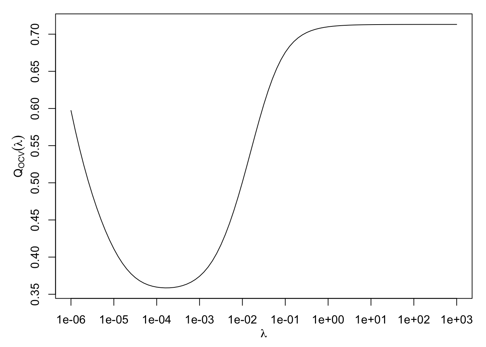

5 Choosing the Smoothing Parameter
\[ \def\b#1{\mathbf{#1}} \]
5.1 Overview
Suppose we are given data \(D=\{(t_i,y_i),\,i=1,\ldots,n\}\) and that our model is: \[ y_i = f(t_i) + \epsilon_i,\qquad \epsilon_i\sim\text{N}(0,\sigma^2) \tag{5.1}\] where the \(\epsilon_i\) are i.i.d. \(\sim\text{N}(0,\sigma^2)\) and \(f(t)\) is assumed to be smooth. Given knot positions \(\{t_i,\; i=1,\dots,n\}\), we can estimate \(f(t)\) with a smoothing spline \(\hat{f}_\lambda(t)\).
How then should we choose the value of the smoothing parameter \(\lambda\)? By setting \(\lambda \rightarrow 0\), we obtain exactly the interpolating spline \(\hat{f}_0(t)\) and a perfect fit to the data. However, this tends to overfit the data: applying it to to a new sample of data where model Equation 5.1 still applies would produce a poor fit. Conversely, by setting \(\lambda \rightarrow \infty\), we get:
\[\begin{align*}
f_\infty(t) &=
\begin{cases} \hat{a}_0, & \nu=1,\ p=1\\
\hat{a}_0 + \hat{a}_1 t, & \nu=2,\ p=3.
\end{cases}
\end{align*}\] Here, \(\hat{a}_0=\bar{y}\), for the \(\nu=1, p=1\) case, and \(\{\hat{a}_0,\ \hat{a}_1\}\), for the \(v=2, p=3\) case, are the OLS linear regression parameters.
If the true \(f(t)\) was constant or linear, this solution would be reasonable, but often we are interested in less regular functions.
5.2 Training/test approach
One way to approach estimation of \(\lambda\) is to partition the set of indices \(I= \{1,\dots,n\}\) into two subsets \(I_1\) and \(I_2\), where \(I_1\cup I_2 = I\) and \(I_1 \cap I_2 = \phi\). Thus we obtain two datasets:
- Training dataset: \(D_1 = \{(t_{i},y_{i}),\ i\in I_1\}\),
- Test dataset: \(D_2 = \{(t_{i},y_{i}),\ i\in I_2\}\).
We fit a smoothing spline \(\hat{f}_{\lambda,I_1}(t)\) to the training dataset, and judge the quality of the fit using the test dataset: \[ Q_{I_1:I_2}(\lambda) = \sum_{i\in I_2} \left(y_i - \hat{f}_{\lambda,I_1}(t_i)\right)^2. \tag{5.2}\] We choose \(\lambda\) to minimise \(Q_{I_1:I_2}(\lambda)\). Many algorithms exist for such minimization, for example through evaluation on a fine grid of \(\lambda\) values, although many more computationally efficient algorithms exist.
5.3 Cross-validation or leave-one-out
This is an extreme form of the above principle. The test dataset \(D_2\) comprises a single observation, \((t_{j},y_{j})\), for a given value of \(j\). The training set \(D_1\) is then \(D_{-j} = \{(t_{i},y_{i}),\ i \in I_{-j}\}\), where \(I_{-j}\) denotes the full set \(I\) excluding \(j\). Then in a slightly amended notation we can write \[ Q_{-j:j}(\lambda) = \left(y_j - \hat{f}_{\lambda,-j}(t_j)\right)^2 \] to assess the quality of fit. Of course, \(j\) is arbitrary, so we repeat this process for each \(j\in\{1,\dots,n\}\) then average the assessments to form the ordinary cross-validation criterion: \[ Q_{OCV}(\lambda) = \frac{1}{n} \sum_{j=1}^n \left(y_j - \hat{f}_{\lambda,-j}(t_j)\right)^2. \tag{5.3}\]
We then choose the value \(\hat{\lambda}\) which minimises \(Q_{OCV}(\lambda)\). Hopefully, a plot of \(Q_{OCV}(\lambda)\) will appear as in Figure 5.1, but there is no theoretical guarantee that this curve will have a unique turning point, making it difficult to locate the minimum.
At first sight, evaluation of \(Q_{OCV}(\lambda)\) for a given \(\lambda\) appears computationally intensive: we must compute \(n\) different smoothing solutions, each corresponding to one of the left-out data points. Fortunately, there is a computational trick which enables us to compute \(Q_{OCV}(\lambda)\) directly from the smoothing spline solution constructed from the whole dataset
5.4 The smoothing matrix
Here we show, for a given value of the smoothing parameter \(\lambda\) and the index \(\nu \geq 1\), that the fitted value \(\hat{f}_\lambda(t_k)\) at each knot \(t_k\) may be written as a linear combination of the observations, \(y_1,\dots,y_n\).
Recall from Proposition 4.3 that the smoothing spline \(\hat{f}_\lambda(t)\), which minimises the penalised sum of squares criterion Equation 4.2 for a given value of the smoothing parameter \(\lambda\), has coefficients \(\hat{\mathbf{a}}, \hat{\mathbf{b}}\) where \[ \begin{bmatrix} \hat{\mathbf a} \\ \hat{\mathbf b} \end{bmatrix} = M_{\lambda}^{-1} \begin{bmatrix} {\mathbf 0} \\ {\mathbf y} \end{bmatrix} \quad \text{where} \quad M_{\lambda} = \begin{bmatrix} 0 & L_\nu^T \\ L_\nu & K_\nu+\lambda^* I_n \end{bmatrix} \]
The fitted values of the smoothing spline at the knots can be represented in matrix form as \[ \mathbf{\hat{f}} = \left[ \begin{array}{c}\hat{f}(t_1) \\ \vdots \\ \hat{f}(t_n)\end{array} \right] = K \, {\hat {\mathbf b}} + L \, {\hat {\mathbf a}} = \begin{bmatrix} K & L \end{bmatrix} \begin{bmatrix} M_\lambda^{12} \\ M_\lambda^{22} \end{bmatrix} \mathbf{y}, \] where \(M_\lambda^{-1}\) has been partitioned in the form \[ M_\lambda^{-1} = \begin{bmatrix} M_\lambda^{11} & M_\lambda^{12} \\ M_\lambda^{21} & M_\lambda^{22} \end{bmatrix}, \] where \(M_\lambda^{12}\) is \(\nu \times \nu\) and \(M_\lambda^{22}\) is \(n \times n\) .
It can be shown that the matrix \[ S_\lambda = \begin{bmatrix} K & L \end{bmatrix} \begin{bmatrix} M_\lambda^{12} \\ M_\lambda^{22} \end{bmatrix} \] is a symmetric positive definite matrix for \(\lambda > 0\) called the smoothing matrix. Then, \(S_\lambda\) connects the data \(\mathbf{y}\) to the fitted values through \[ \mathbf{\hat f} = S_\lambda \, \mathbf{y}. \tag{5.4}\] That is, the fitted values are simple linear function of the data.
5.5 Effective degrees of freedom
How many degrees of freedom are there in the smoothing spline? There are altogether \(n+\nu\) parameters, \(\nu\) in \(\mathbf{a}\) and \(n\) in \(\mathbf{b}\), but these are not completely free.
We showed earlier that as the smoothing parameter \(\lambda\rightarrow \infty\), the smoothing spline \(\hat{f}(t)\) becomes the least-squares regression solution for model formula \(y \sim 1\) when \(\nu=1\), or model formula \(y \sim 1+t\) when \(\nu=2\). Thus, when \(\lambda= \infty\), the degrees of freedom in the spline is \(\nu\). We also showed that when \(\lambda=0\), the smoothing spline \(\hat{f}(t)\) becomes the interpolating spline, for which the degrees of freedom is the number of observations, \(n\).
Thus, intuitively, for values of \(\lambda\) between the extremes of \(0\) and \(\infty\), the spline degrees of freedom should lie somewhere between \(\nu\) and \(n\); the greater the smoothing, the fewer the degrees of freedom. How can we capture this notion precisely?
A clue comes from Ordinary Least Squares (OLS) regression, in which the fitted values are given by \[ \hat{\mathbf{y}} = X (X^T X)^{-1} X^T \mathbf{y} = H \mathbf{y}, \] where \(X\) is the \(n \times p\) design matrix, where \(p\) is the number of model parameters. Here, \[ H = X (X^T X)^{-1} X^T \] is called the hat matrix, which linearly maps the data \(\mathbf y\) onto the fitted values \(\hat{\mathbf{y}}\). Using the property that \(\text{trace}(QR) = \text{trace}(RQ)\) for matrices \(Q,R\) of conformable dimensions, the trace of the hat matrix is: \[\begin{align*} \text{trace}(X(X^T X)^{-1} X^T) &= \text{trace}((X^T X)^{-1} X^T X)\\ &= \text{trace}(I_p)\\ &= p, \end{align*}\] where \(I_p\) is the \(p \times p\) identity matrix. Thus, for OLS regression, we see that the trace of the hat matrix equals the number of model parameters.
Now in Equation 5.4 we see that the smoothing matrix \(S_\lambda\) takes the role of a hat matrix, since it linearly maps the data onto the fitted values. This suggests that, for the smoothing spline, we can calculate an effective number of degrees of freedom as: \[ \text{edf}_\lambda = \text{trace} \, S_\lambda. \tag{5.5}\] It can be shown from the limiting behaviour of the smoothing splines as \(\lambda \rightarrow \infty\) and \(\lambda \rightarrow 0\) that \(\text{edf}_\infty = \nu\) (the number of parameters in the OLS solution) and \(\text{edf}_0 = n\) (the number of parameters in the interpolating spline).
5.6 Generalised Cross Validation
The cross-validation criterion \(Q_{OCV}(\lambda)\), defined in Equation 5.2, is used to set the smoothing parameter, \(\lambda\). However, as noted in Section 5.3, using Equation 5.2 to compute \(Q_{OCV}(\lambda)\) would be impractical for large \(n,\) since it would require fitting a new smoothing spline \(\hat{f}_{\lambda,-j}\) for each leave-one-out dataset \(I_{-j}\).
Fortunately, it is possible to compute \(Q_{OCV}(\lambda)\) directly from the spline \(\hat{f}_{\lambda}\) fitted to the full dataset. It can be shown that Equation 5.2 can be rewritten: \[ Q_{OCV}(\lambda) = \frac{1}{n} \sum_{j=1}^n \left(\frac{y_j - \hat{f}_{\lambda}(t_j)}{1-s_{jj}}\right)^2, \tag{5.6}\] where \(\hat{f}_{\lambda}(t_j)\) is the full-data fitted spline value at \(t_j\) given by Equation 5.4, and \(s_{jj}\) is the \(j\)th diagonal element of the smoothing (hat) matrix \(S_\lambda\).
Prior to the discovery of algorithm to compute Equation 5.6 quickly, a computationally efficient approximation to the cross-validation criterion Equation 5.2 was proposed, called the Generalised Cross-Validation criterion (GCV): \[ Q_{GCV}(\lambda) = \frac{ \frac{1}{n} \sum_{j=1}^n \left(y_j - \hat{f}_{\lambda}(t_j)\right)^2}{\left(1-\tfrac{1}{n}\text{trace}(S_\lambda)\right)^2}. \tag{5.7}\] Thus Equation 5.7 replaces \(s_{jj}\) in Equation 5.6 with the average of the diagonal elements of \(S_\lambda\), which equals \(\tfrac{1}{n}\text{edf}_\lambda\). Thus a low value of \(\text{edf}_\lambda\) will deflate \(Q_{GCV}(\lambda)\), making that value of \(\lambda\) more favourable.
In principle, OCV supplants GCV, but GCV is still used as it is numerically more stable. In particular, GCV is used in the \(\texttt{mgcv}\) package – this will be discussed in the next chapter.